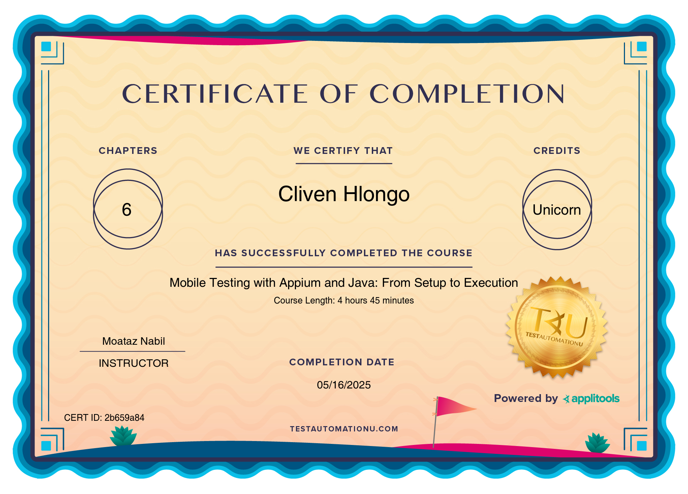

ABOUT ME
I am an experienced Junior test automation specialist with a strong focus on ensuring the quality and reliability of web and mobile applications. I have hands-on experience in automating tests for Web and Android Applications, APIs (SOAP and REST). In addition to my testing experience, I have DevOps experience, particularly in configuring GitLab CI/CD pipelines to support continuous testing and integration workflows. I have also worked with Dynatrace for application performance monitoring, ensuring system stability and proactive issue detection
SKILLS
- Selenium & Appium
- REST & SOAP API Testing
- GitLab CI/CD, Bitbucket, Confluence,Jira, Bamboo
- Java, Cucumber, TestNG, JUnit
- Android & iOS Testing
- SoapUI, Postman
- Dynatrace, Elastic
- vRealize Automation
EDUCATION
- ISTQB Foundation Level Certification
- Certified Git Associate (View Badge)
- Mobile testing with Appium and Java: From Setup to Execution 
- Diploma in Computer Systems Engineering

PROJECTS
- ParaBank-Automation Project: ParaBank Automation testing - GitLab CI/CD
Automated the functional testing of the Parabank web application. Integrated the tests with GitLab CI/CD to run in a headless Chrome environment using Docker, and generate rich HTML test reports post-execution. The project ensures clean test builds and integrates structured BDD scenarios for better traceability
CONTACT
Email: jackymashimbhy@gmail.com
Cell: 0810020325
WhatsApp: Chat on WhatsApp
LinkedIn: linkedin.com/in/cliven-jacky-h-9a7b44211